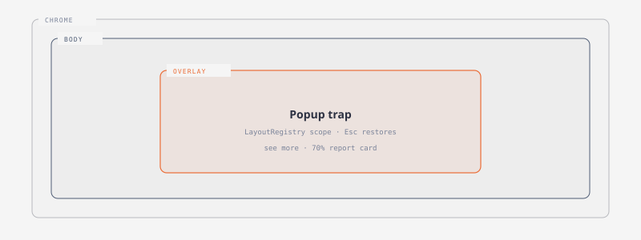
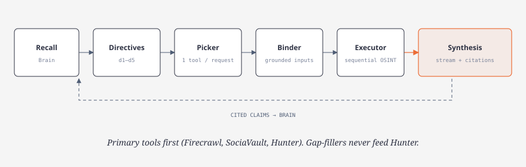
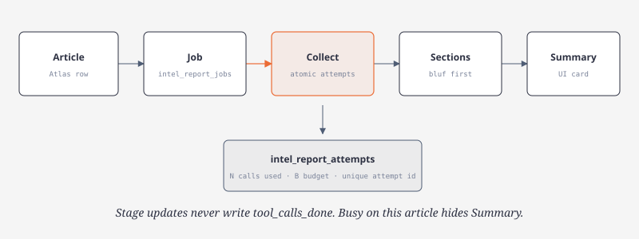
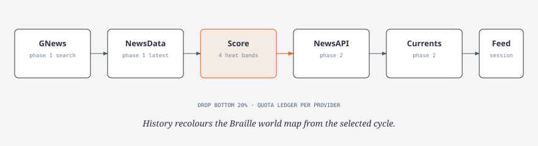
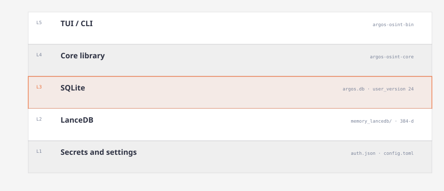

Usage
How to run the terminal UI and CLI. Product tour in the README. Investigation mechanics in architecture.md. Keys and model roles in providers.md.
Terminal UI
cargo run -p argos-osint-binArgos opens on Home. ↑↓ and Enter open an app. Number keys 1–9 open Intel, Atlas, Brain, Recon, Jobs, Logs, Tools, Models, and Profile. Esc or the Home control returns to Home. ? opens the shortcut card for the current screen.

| Keys | Action |
|---|---|
| Tab | Next control |
| Ctrl+U / Ctrl+D | Scroll the focused pane |
| Mouse wheel | Scroll the pane under the pointer |
| Ctrl+K | Command palette |
| Ctrl+C | Cancel a running turn, or clear a draft |
| Ctrl+Q | Quit (confirm within one second if work is pending) |
A click commits on mouse-up only if the pointer stays within one cell of the press. Dragging across Home does not launch an app.
Recon
Recon opens on a full-screen list of recent investigations. Enter opens the transcript. Esc from the transcript returns to the list.
In the transcript, Tab moves between the log and the prompt. Enter sends; Shift+Enter inserts a line. ↑↓ select a message, decision, or tool; ←→ fold a decision or tool log. f opens full text. Ctrl+N starts an investigation. Alt+Left / Alt+Right cycle recent threads when the cursor is not in a field.
The question sits on a raised prompt band. The answer is Markdown. Decisions and lookups stay collapsed. A ◉ brain mark opens memories that were in that synthesis prompt. A new investigation stays untitled until Recon names it from the first question. :rename, :delete, and :delete-with-insights are composer commands.
Turn flow, bindings, and citations: architecture.md.

Intel
Bulletin board of Atlas headlines: classification tabs, day filter, search, hero story. Enter opens Briefing Focus (claims, tags, links, country mini-map, Summary). View full report opens a 70%-width card. A mode button starts Verify / Explain / Assess Outlook / Full Assessment as a Jobs-backed report. Busy work on the selected article hides Summary and that launch control.
Details: concepts.md · architecture.md.

Atlas
Two-phase news pipeline. Run scans 48 hours with GNews and NewsData, scores countries, then pulls NewsAPI and Currents headlines for the kept bands. Pause stores a cursor; Resume continues. History lists saved cycles; a Braille world map follows the selected cycle.
Pipeline and quotas: architecture.md.

Other apps
| App | Role |
|---|---|
| Brain | Saved memories, Find, Create / Pin / Delete, path graph (recall) |
Tools (Osint) | Manual HTTP tools, keys, documentation, history |
Models (Providers) | Defaults, OpenRouter, Google, Nvidia |
| Jobs | Background work (lifecycle) |
| Logs | Durable events |
Profile (System) | Hardware and storage paths |
Module ids vs labels: concepts.md. TUI contracts: conventions.md. Surface audit: ui-interaction-audit.md.
CLI
Prefix with cargo run -p argos-osint-bin -- when running from source. Commands use the same store, registry, and executor as the TUI. JSON where practical.
# Recon
argos recon new --title 'Example investigation'
argos recon list --search example
argos recon show <thread-id>
argos recon ask <thread-id> 'What is known about example.org?'
argos recon ask-new 'What is known about example.org?'
argos recon resume <run-id>
argos recon retry <run-id>
argos recon delete <thread-id> --with-insights
# Tools
argos osint list
argos osint describe shodan_internetdb
argos osint run shodan_internetdb --input '{"ip":"8.8.8.8"}'
argos osint history
argos osint attach <call-id> <thread-id>
argos osint user-agent 'Argos contact@example.com'
# Models
argos defaults show
argos defaults set recon --provider openrouter --model <model-id>
argos defaults set tool-picker --provider openrouter --model typesafe/jev-1.13
argos defaults set synthesis --provider openrouter --model <model-id>
argos models --role recon
# Brain
argos insights --entity example.org
argos remember --app research --conversation thread-123 'A manually saved fact'
argos recall 'What do I know?'
argos memories
argos memories reindexrecon show prints the plan (directives, grounding, bindings, picker records). Default delete keeps Brain memories and marks their source deleted; --with-insights removes memories owned only by that investigation. recon limits sets per-turn budgets, including --max-turn-seconds (default 900). Synthesis streams to the transcript and to stderr for argos ask; stdout stays the final JSON.
Nominatim and SEC require an identifying User-Agent. Set it before those lookups.
State
State lives in ~/.argos (ARGOS_HOME overrides). Opening argos.db runs additive migrations (user_version 24). Brain vectors sit in memory_lancedb/. config.toml holds role defaults; auth.json holds credentials (owner-only on Unix). ARGOS_EMBED=0 skips MiniLM and uses Jaccard recall.

Persistence: architecture.md.